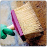
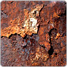
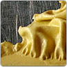
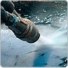
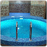
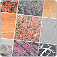
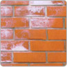

Докер Кемикал. Смывки

ПРОФЕССИОНАЛЬНАЯ ХИМИЯ DOCKER
|
 Обезжиривание и защита поверхностей |
 Преобразователи, удалители ржавчины |
|
 Средства для смывки красок, лаков и грунтов |
 Средства для очистки пятен масел, смывка битума, нефтепродуктов и клея |
|
 Средства для очистки сантехники, бассейнов, защита от плесени |
Средства для промывки теплообменных систем |
|
 Средства для очистки и защиты натурального камня |
 Средства для очистки фасадов |

Средства для смывки красок и лаков
Смывка краски DOCKER S4 — Общестроительная смывка всех видов ЛКП (краска, эмаль, НЦ, ХВ). Эффективно удаляет любые водно-дисперсионные краски (интерьерные, фасадные), а также любые эмали (ПФ-115, ПФ-133, ПФ-266, грунт-эмаль 3 в 1 и др.). Смывка особенно эффективна для порошковых красок. Не содержит кислоты. Быстрого действия (3-10 мин.). Благодаря тиксотропности (гель) легко наносится на вертикальные поверхности, не стекая с них. Не содержит кислоты.
Смывка краски DOCKER S5 — Промышленная смывка предназначена для быстрого (3-10 мин.) и эффективного удаления сложных лакокрасочных покрытий. (эпоксиды, огнеупорные, судовые, мостовые, ж\д краски, грунты, защитные краски военного назначения т.д.). Эффективно удаляет краску с бетона. Глубоко проникает в покрытие, активно размягчая его. Готовый к применению продукт. Смывка краски предназначена для удаления лакокрасочных материалов на масляной, алкидной, фенолформальдегидной, эпоксидной, эпоксиэфирной, перхлорвиниловой основах. Без запаха
Смывка краски по дереву DOCKER S5 Wood+ предназначена для быстрого (3-10 мин.) и эффективного удаления сложных лакокрасочных покрытий на масляной, алкидной, фенолформальдегидной, эпоксидной, эпоксиэфирной, перхлорвиниловой и акриловой основах с деревянных поверхностей.
Глубоко проникает в покрытие, активно размягчая его. Готовый к применению продукт. Без запаха. Гель
Смывка лака по дереву DOCKER S5 LACK предназначена для быстрого (3-10 мин.) и эффективного удаления сложных лаковых покрытий с деревянных поверхностей.
Глубоко проникает в покрытие, активно размягчая его. Готовый к применению продукт. Без запаха. Гель
Смывка для удаления граффити DOCKER S5 Graffiti — Предназначена для быстрого (3-10 мин.) и эффективногоудаления граффити, маркеров с неокрашенных поверхностей фасадов ( в том числе стеклянных витрин). Эффективно смывает граффити ( краски) следующих составов: воднодисперсионные, акриловые, алкидные, масляные. Без запаха.Гель
Смывка краски DOCKER SR1 — Промышленная смывка химически стойких ЛКП. Не содержит кислоту. Используется в основном для погружного метода. Смывка предназначена для удаления порошковых красок: эпоксидных, эпоксиполиэфирных, полиэфирных, полиуретановых, полиакрилатных с поверхностей из черных и цветных металлов.
Смывка краски DOCKER SR2 — Промышленная смывкахимически стойких ЛКП. Не содержит кислоту. Используется в основном для погружного метода. Смывка предназначена для удаления порошковых красок: эпоксидных, эпоксиполиэфирных, полиэфирных, полиуретановых, полиакрилатных с поверхностей из черных и цветных металлов.
Смывка краски СП-6 DOCKER — Предназначена длянаружных и внутренних работ. Применяется для удаления старых полиуретановых, эпоксидных, акриловых и др. лакокрасочных покрытий с металлических, деревянных, бетонных поверхностей. Общестроительная смывка всех видов ЛКП(краска, эмаль, НЦ, ХВ). Эффективно удаляет любые водно-дисперсионные краски (интерьерные, фасадные), а также любые эмали (ПФ-115, ПФ-133, ПФ-266, грунт-эмаль 3 в 1 и др.).
Смывка краски СП-7 DOCKER - Предназначена для наружных и внутренних работ. Применяется для удаления старых полиуретановых, эпоксидных, акриловых и др. лакокрасочных покрытий с металлических, деревянных, бетонных поверхностей. Смывка всех видов ЛКП (краска, эмаль, НЦ, ХВ). Эффективно удаляет любые водно-дисперсионные краски (интерьерные, фасадные), а также любые эмали (ПФ-115, ПФ-133, ПФ-266, грунт-эмаль 3 в 1 и др.). Смывка особенно эффективна для порошковых красок. Не содержит кислоты.
Средства для очистки пятен масел, смывка битума, ГСМ, копоти и клея
MAZBIT TURBO — Концентрированный индустриальный очиститель всех видов тяжелых загрязнений для эффективной быстрой очистки любых поверхностей: деталей, узлов, механизмов, пластмасс, так же общестроительных материалов (бетон, камень, плитка, асфальт) от различных загрязнений масляно-жирового и нефтяного характера, ГСМ, различных смазок, нефти, гудрона, графита, битума, мазута. . Не содержит хлора и кислоты
MAZBIT + — Концентрированное моющее средство на водной основе для очистки различных поверхностей от последствий пожара. Средство представляет собой усиленную концентрированную жидкость на основе усиленных щелочных композитов и органических моющих присадок. Предназначено для эффективной быстрой очистки любых поверхностей: общестроительных материалов ( дерево, бетон, штукатурка, камень, плитка) от различных загрязнений продуктами горения (копоть, сажа, нагар). Не содержит кислоты
MAZBIT — Концентрированное средство для очистки загрязненных поверхностей от: масляных композиций, и абразивных загрязнений (станки, детали автомобилей, механизмы), почвенных отложений.
Удаляет пыль и грязь.
Не имеет запаха. Не содержит хлора и кислоты
MAZBIT TRUCK — Концентрированное средство для очистки дорожной и строительной техники, ж/д транспорта.
Очистка корпусов морских судов.
Идеально смывает ГСМ, остатки различных смазок, масел, гудрона, графита, битума, мазута, копоти и сажи.
Удаляет пыль и грязь. Не содержит кислоты.
MAZBIT BIO — Для пищевых производств. Высококонцентрированное средство для удаления комбинированных отложений органического происхождения.
Используется для очистки коптильных камер, грилей, духовок, печей, жаровен, тележек, палок для тележек, трубопроводов, вентиляций, мойки полов и стен на предприятиях пищевой и перерабатывающей промышленности на предприятиях общественного питания.
Обладает дезинфицирующим эффектом. Не содержит хлор.
Преобразователи и удалители ржавчины
NITTRON — нейтральный преобразователь ржавчины с усиленными ингибиторами.
Предназначен для модификации коррозии на поверхностях черных металлов, строительных металлоконструкций, труб, арматурных сталей.Состав может применяться в различных промышленных сферах в т.ч., при авторемонтных работах, быту.
STEEL PLUS — Мгновенный удалитель ржавчины ( не содержит ортофосфорную кислоту)
Предназначен для химической очистки и удаления ржавчины с любых поверхностей.
DOCKER ИФХАН-58ПР — нейтральный преобразователь ржавчины.
Предназначен для подготовки ржавых стальных изделий (арматуры) к бетонированию, нанесению мастик, а также к окраске. Состав может применяться в различных отраслях промышленности и быту.
DOCKER STEEL — Преобразователь ржавчины
Предназначен для химической очистки и обработки ржавых металлических поверхностей изделий из стали, с одновременным фосфатированием и пассивацией поверхности, а также обработки окалины на сварных швах перед нанесением лакокрасочных покрытий.
Средства для очистки фасадов
DOCKER FASADE — Средство предназначено для быстрого и эффективного удаления солевых отложений (высолов) с различных минеральных поверхностей. Глубоко проникает в поверхность, растворяя и удаляя соли на всей глубине пропитки. Не изменяет свойства и структуру поверхности. Удаляет соли преимущественно карбонатного, известкового и сульфатного происхождения.
FASADE CLEAN — Активный индустриальный очиститель (удалитель), атмосферных загрязнений, плесени, ржавых потеков, с фасадов зданий и сооружений
Средства подготовки поверхностей
DOCKER DEKAMET — Концентрированное средство для обезжиривания и очистки деталей, и механизмов. Средство предназначено для очистки поверхностей: деталей, узлов, механизмов, пластмасс. Так же, производственных площадей и цехов, резервуаров, емкостей от различных жиров, масел растительного, минерального происхождения. Удаляет пыль и грязь.
DOCKER BLOCK — Смазка для пресс-форм. Смазка образует на поверхности плёнку, обеспечивающую защитный слой поверхности при производстве изделий из резины, каучука, пластмассы, полиэтилена, полипропилена, стеклопластика и других материалов. Плёнка устойчива к воздействию влаги, технических жидкостей.
Средства для очистки сантехники (Бассейны)
WATER POOL — Удаление известковых отложений. Сантехника в отелях, ресторанах, бассейнах, больницах (раковины, остекленные части душевых, санитарные сооружения). Предприятия пищевой промышленности: пекарни, кухни, скотобойни, пивоварни, предприятия мясоперерабатывающей и молочной промышленности.
BIOGREEN — Очистка плесени. Без хлора. Универсальное средство для удаления и профилактики грибков и бытовой плесени. Мощная эффективная смывка для профилактики и уничтожения плесени на окрашенных, каменных, бетонных и других пористых поверхностях. Используется так же при внутренних и наружных работах для усиления фунгицидных свойств водо разбавляемых красок, шпаклевок и штукатурок, применяемых для ремонта поверхностей, подверженных образованию плесени.
WATER TURBO — Очистка канализации. Универсальное высококонцентрированное средство для прочистки всех видов промышленных стоков, мусоропроводов, канализации.
Средства для смывки цементных растворов
DOCKER ZEMENT — Средство для беспроблемного и быстрого удаления цементных налётов, остатков бетона и строительного раствора, известковых налётов, выцветов и неорганических загрязнений.
DOCKER EPOXY (G) — гелевый состав на основе специальных растворителей. Применяется для очистки различных поверхностей от затвердевших застывших остатков эпоксидных составов. Глубоко проникает в структуру эпоксидного состава, активно размягчая его. Готовый к применению продукт.
Средства очистки систем отопления
DOCKER THERMO — Эффективный индустриальный очиститель для промывки системы отопления и теплообменников. Рекомендуется для обработки бойлеров, котлов высокого и низкого давления, конденсаторов, теплообменников, трубопроводов, для промывок бытовых водонагревательных приборов
THERMO PROTECT — Применяется в качестве щелоченияпосле кислотных промывок теплоэнергетического оборудования.Данное вещество представляет собой жидкое средство с активностью натра едкого до 30 % (является каустической содой в жидком виде) для более лёгкого растворения в водных средах, в отличие от твёрдого состояния натра едкого.
THERMO BIO — Применяется для очистки технологического оборудования, трубопроводов, ёмкостей,
в мясо- молочной, пивоваренной, рыбоперерабатывающей, винодельческой и других отраслях промышленности (очистка теплообменников, резервуаров, трубопроводов, пастеризаторов, сепараторов и т.д.).
Эффективно удаляет отложения с хромированных поверхностей, нержавеющей стали, латуни, меди, пластмассы.
Средства для профессиональной очистки и защиты натурального камня
DOCKER STONE -предназначен для эффективного удаления сильных загрязнений, жировых отложений, известковых налётов, лёгкого цементного налёта и ржавчины на поверхностях, устойчивых к воздействию кислот.
TEFLON STONE — Для универсальной защиты натуральных поверхностей: мрамор, гранит, керамика, травертин, песчаник, натуральная мозаика, декоративное стекло